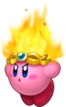
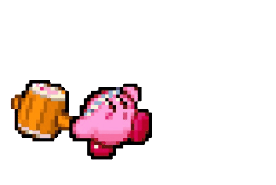
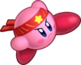
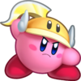
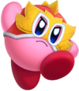
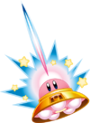
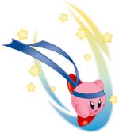
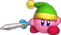
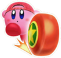
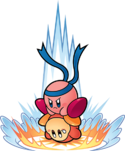

|

Kirby ganha a habilidade de cuspir fogo e realizar outros ataques de fogo.
FIRE
|

Kirby pode golpear seus oponentes usando um poderoso martelo de madeira.
Hammer
|

Kirby ganha acesso a uma grande variedade de movimentos baseados em artes marciais.
Fighter
|

Esta e Parasol são as habilidades de cópia mais comuns na série desde Kirby's Return to Dream Land Deluxe .
Cutter
|
|

Esta habilidade funciona de forma semelhante a Backdrop, Suplex e Fighter.
Lutador
|

Nos títulos anteriores, Kirby perderia essa habilidade após sair do estágio em que se encontra.
Ovni
|
Kirby é capaz de “escanear” um inimigo e copiar sua essência para ganhar uma nova habilidade.
Copy
|

A faixa azul de Throw Kirby é idêntica à faixa inicial do Suplex.
Lançar
|
|
Artist possui um ataque que, quando usado, faz com que Kirby perca essa habilidade.
Artist
|

O chapéu de Sword Kirby é uma referência deliberada a Link de The Legend of Zelda .
Sword
|

Kirby se transforma em uma roda e pode rolar muito rapidamente.
Wheel
|

Esta habilidade é uma versão atualizada do Backdrop.
Suplex
|